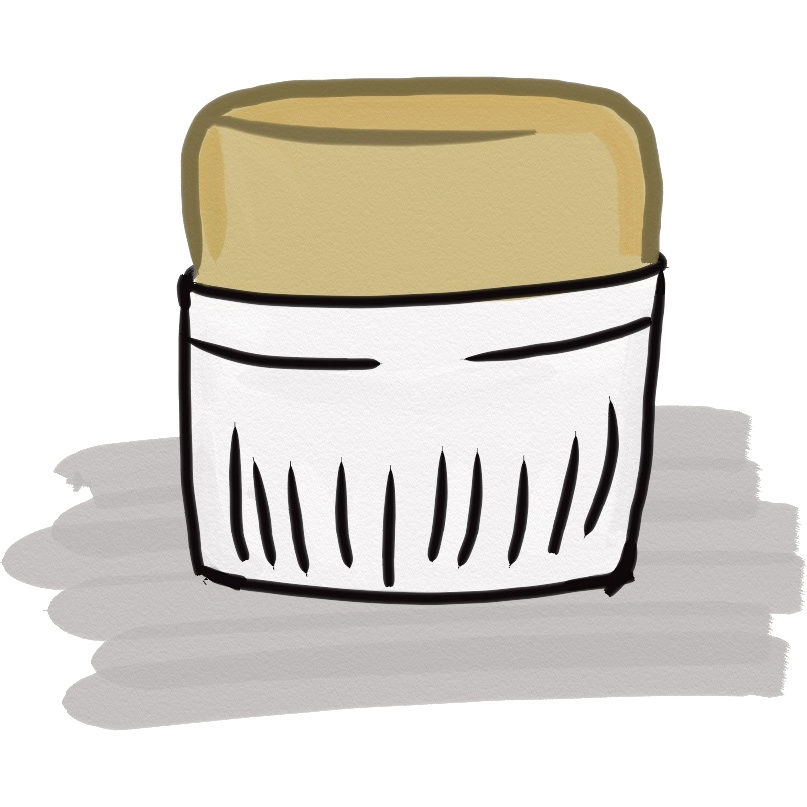

This game will last for exactly 15 minutes. Here's how it works.
You're a baker: your job is to bake soufflés.

Each round begins with the dough going into the oven.
Your task is to decide how long to let it bake before opening the oven and taking it out.

Here's the catch: if you take a soufflé out of the oven before it's ready, it won't have risen, and you'll have to throw it out and start again.
You'll be using three different ovens, red, blue, and green, with different settings. In some ovens the soufflés will be ready quickly, while in others they will take longer. Some ovens are also more consistent than others.
You'll need to figure out, through trial and error, how long to leave the soufflés in each oven.
Your goal is to score as many points as you can in 15 minutes. You get 10 points for every succesful soufflé you bake. If you take one out of the oven too soon, you don't get any points, and you move on to the next soufflé. In this game, soufflés don't burn. This means that if you leave them in the oven too long, you won't lose any points, but you will have wasted some time.
Try to strike a balance between opening the oven too soon, and not getting any points, and waiting too long so that you don't have time to bake as many soufflés.
At the end of the game, the points you've won will be converted to cash, and added to your Mechanical Turk payment. You'll receive 1 cent for every 10 points.
Once you're ready to begin, please click the button below to begin the game. Please note that the game cannot be paused once it begins.